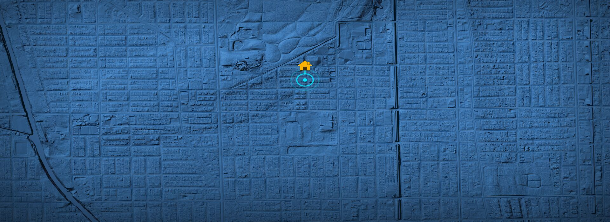
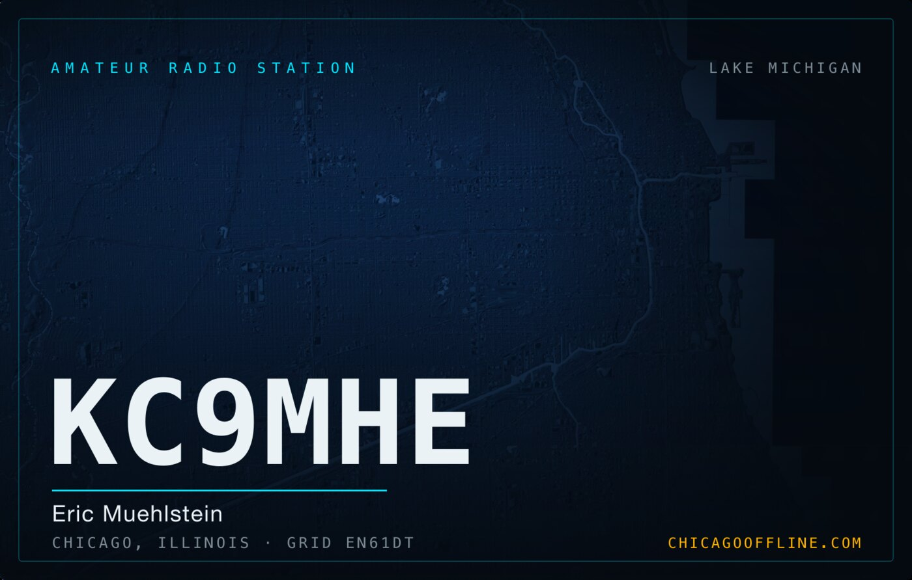
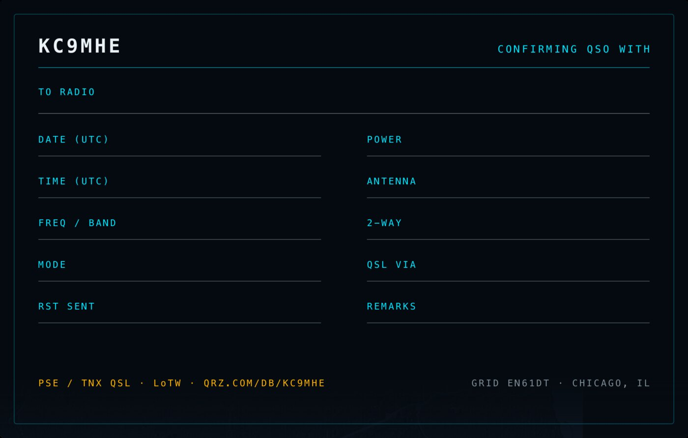

MeshCore / LoRa
Primary focus. Running observer and repeater nodes on the Chicago mesh and maintaining the firmware build the region standardizes on. Current radio settings and the node map live at chicagooffline.com.

Amateur Radio Station
Eric Muehlstein · Chicago, Illinois · Grid EN61
Licensed since 2007, General since 2009. These days most of my airtime goes to digital modes and building the infrastructure other people operate on.
Primary focus. Running observer and repeater nodes on the Chicago mesh and maintaining the firmware build the region standardizes on. Current radio settings and the node map live at chicagooffline.com.
Observing the serial protocols for all of the radios in my collection and programming them via a codeplug generator, codeplugger.
WRXC682. Family and neighborhood comms — the licensing tier most people actually need, and the one worth making easy to program. I run a repeater at home on 550 with DPL 023, mostly for the fun of it.
Always trying to blur the line between a serial port and a walkie talkie.
I'm the trustee and primary builder behind Chicago Offline — a community LoRa mesh for Chicagoland, built so the city has a communications layer that works when the commercial one doesn't.
It's a live network with public node maps, health monitoring, MQTT observer infrastructure, and a preconfigured firmware build so joining takes minutes instead of an evening of guesswork.
Mostly open source. Mostly things that were annoying enough the second time that I automated them.
Codeplug generator. Takes structured repeater data plus a profile and emits a ready-to-import codeplug — no more hand-entering four hundred channels into a vendor CPS.
A YAML spec for describing spectrum resources, and a data library of known channel plans, repeaters, DMR talkgroups, and antenna systems. The thing codeplugger reads from.
Codeplugger profiles for the Chicago Offline shared community nets — so everyone's radio comes out programmed the same way.
Python repeater controller for amateur and GMRS repeaters. IDs, courtesy tones, announcements, scheduling.
Fork of the MeshCore observer firmware preconfigured with the radio and MQTT settings Chicagoland standardizes on. Flash and you're on the mesh.
Reverse-engineering reference for the Baofeng DM-32UV: memory layout, firmware variants, programming tools, and the hardware traps that soft-brick radios.
QSL via QRZ or LoTW. For anything mesh-related, the Chicago Offline channels are faster than email.

